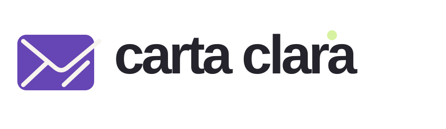
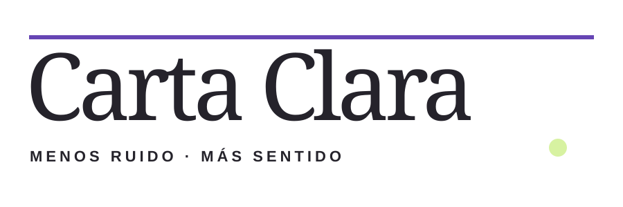
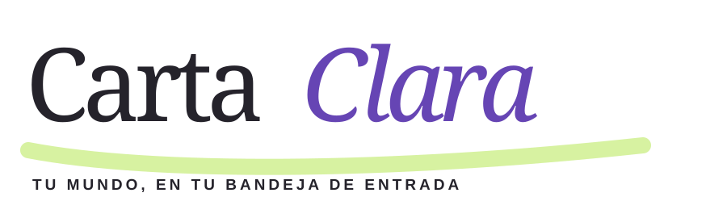
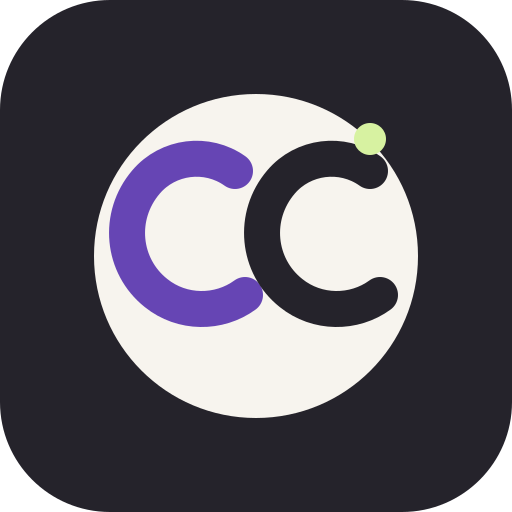

Carta Clara · seis direcciones visuales para elegir.

02 · SelloInstitucional y reconocible
03 · SobreRelaciona la marca con el correo
04 · EditorialMás cultural y refinado
05 · SubrayadoMás expresivo para redes
06 · MonogramaAvatar, favicon o marca de agua